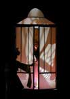

Program Notes to A Little Girl Dreams of Taking the Veil
Carla Harryman
Working Note: The opera is based on Dorothea Tannings translation of Max Ernsts 1930 surrealist collage novel Reve dune petite fille qui voulut entrer au Carmel. Using Victorian penny novel visual motifs and captions as the basis for its construction, Ernsts book explores the non-rational but very real world of religious ecstasy and erotic desire. The opera interleaves the events of the little girls dream with a surrealist narrative about the circumstances surrounding the dream including a rape, which the child transforms into a fantastic prize: the opportunity for her first communion.
In the opera, the dream has four seamless stages, indicated in the novel by chapter headings: The Tenebreuse, The Hair, The Knife, and The Celestial Bridegroom.
In the Tenebreuse, the little girls desire to enter the church and to fit into religious as well as other forms of conventional society is shown to be at odds with her spontaneous imagination and powerful erotic desires. In addition, her imagination of "fitting in" is so unlike what is expected of her that the conflict between her internal sensibility and exterior reality causes her to split in two. The opera version represents her as three: Spontanette, the dreamer, and Marceline-Marie, the dreamed or split Spontanette. Throughout the work, the dream demonstrates the precociousness of the character as it unmasks the repressive institutions of church and bourgeois society through the dreamers powerful journey into the vast interior of her own psyche.
The Hair section of the dream opens to the interior of our heroines erotic self-discovery. In it, she tries on erotic fantasies with exploratory passion. In this eroticized dream-realm, she invites furry animals and insects under her skirts, experiments with fantasies about priests and father-figures represented in her dream as lascivious male grotesques, and tries on associations of sexuality with anthropophagus (flesh-eating) trees and death, debacle, torture, natural elements, and ornate spectacle.
The autoerotic phantasms in The Hair segue into a vast and extraordinarily powerful interior realm in The Knife. Here she discovers an atavistic and tragic god (represented as an eagle in the novel), who identifies himself as god without woman, and her own anger and aggressive powers in the context of patriarchal betrayal. In adopting and integrating what is typically considered masculine aggressivity she defeats the masculinist stereotypes instigated against powerful female figures such as crones or Pandoras who are claimed under a patriarchal mythos as the propagators of catastrophes, pestilence, rivers, war and pulmonary influenza while she constructs a composite of forcefully enacted androgynous identities.
By the end of The Knife, Marceline-Marie/Spontanette has so thoroughly experienced and integrated her own emotional powers that the coming of the long awaited husband-god in the last section, The Celestial Bridegroom, proves to be somewhat comical and anti-climactic. Indeed, she finds this god, who is represented as a series of split images and phony posturing, in especially bad taste. The inadequate god-lover and the disaffected child mutually abandon each other in a disarrayed psychological state, mixed as it is with narcissism, tacit acknowledgments, and indifference in which an ambivalently redemptive anger is passed off from the god to the child, becoming the only certain connection between them.
A Little Girl Dreams of Taking the Veil
A chamber opera by Erling Wold
Based on Max Ernsts collage novel, Reve dune Petite Fille qui Voulut Entrer au Carmel
Translated by Dorothea Tanning
Directed by Jim Cave
Visual design by Amy Claire Trachtenberg
Dramaturgy by Carla Harryman
Conducted by Deirdre McClure
Lighting design by Jack Carpenter
Associate set design and fabrication by Oliver DiCicco
Featuring: Laurie Amat, Ken Berry, Jim Cave, Deborah Gwinn and Rachael Wylie
A Little Girl Dreams of Taking the Veil opened to a second run March 1-9, 2000 and was a presentation of Musical Traditions, Inc. and ODC Theater. This production of A Little Girl Dreams of Taking the Veil received funding from OPERA Americas The Next Stage Program. The project was funded in part by the California Art Council, and an Individual Artist Commission from SF Art Commissions CulturalEquity Grant and by the Zellerbach Family Fund.
|  | View photos from opera and listen to sound files |